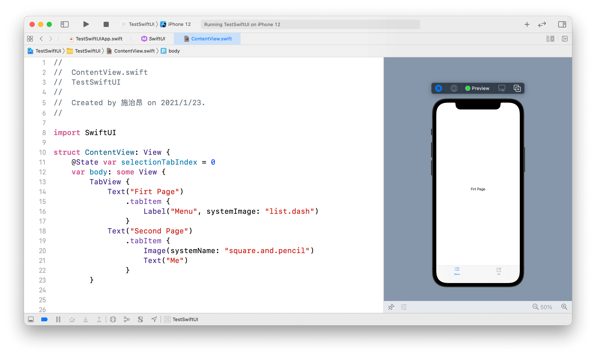

绝大多数App的底部都有Tabbar来切换不同的功能，在UIKit框架中使用UITabbarController来实现这样的操作，到了SwiftUI中被TabView取代了。
这篇文章我们将学习关于TabView的一些基础知识和高阶用法，其中包括这几个主要方面：
- 怎么创建
TabView TabView比UITabbarController的优势- 自定义TabView的外观
绝大多数App的底部都有Tabbar来切换不同的功能，在UIKit框架中使用
UITabbarController来实现这样的操作，到了SwiftUI中被TabView取代了。
这篇文章我们将学习关于TabView的一些基础知识和高阶用法，其中包括这几个主要方面：
- 怎么创建
TabView TabView比UITabbarController的优势- 自定义TabView的外观
到公众号【iOS开发栈】学习更多SwiftUI、iOS开发相关内容。
开始使用TabView
最基础的TabView
1
2
3
4
TabView {
ContentView()
SecondView()
}
这样就创建了一个最简单的TabView，和其他很多SwiftUI的控件一样TabView的初始化也是接收一个@ViewBuilder修饰的Viewpublic init(@ViewBuilder content: () -> Content)。
其中的ContentView和SecondView是TabView的两个Tabbar，但是由于我们没有设置Tabbar的图片和文字，此时App最底部的导航栏是空的。
给Tabbar设置图片和文字
得益于SwiftUI的声明式语法，我们设置tabbar中文字和图片的效率比UIKit高了10倍。
1
2
3
4
5
6
7
8
9
TabView {
ContentView()
.tabItem { Label(“Menu”, systemImage: “list.dash”) }
SecondView()
.tabItem {
Image(systemName: “square.and.pencil”)
Text(“Me”)
}
}

给tabbar设置图片和文字使用的是tabItem视图修改器。
第一种设置文字和图片的方法是使用Label控件，它通过一个文字和一个图片作为参数来进行初始化，而第二种方式是直接使用了一段文字和一张图片。
由于tabItem修改器的参数是一组View所以原则上来说可以使用任意View来设置tabbar的样式。
1
2
3
4
5
6
7
8
9
10
11
12
13
14
struct Tabbar: View {
var body: some View {
VStack {
Text(“1”)
Text(“2”)
Image(systemName: “square.and.pencil”)
Image(systemName: “list.dash”)
}
}
}
.tabItem {
Tabbar()
}
使用了一个包含两段文字和两张图片的Tabbar来设置tabItem，最终能够显示出来的是Text("1")和Image(systemName: "square.and.pencil")，所以tabItem在实现的时候应该是使用的子视图中的第一段文字和第一张图片，且不论文字和图片的顺序如何，它们最终展示出来的位置都不会变。
自定义TabView外观
修改tabView的样式
使用tabViewStyle修改器来设置不同的样式可以轻易满足不同的场景需要。
TabViewStyle
解释
DefaultTabViewStyle
默认样式，效果类似UITabbarController
PageTabViewStyle
没有下面的标签，可以左右滚动，常见于新闻App
使用方式：
1
2
3
4
TabView {
}
.tabViewStyle(DefaultTabViewStyle())
设置tabbarItem的选中颜色
使用accentColor()修改器可以设置tabItem的选中颜色。
1
2
3
4
.tabItem {
Label(“Menu”, systemImage: “list.dash”)
}
.accentColor(.green)
accentColor是设置View高亮颜色的修改器，设置后tabItem在未选中状态下是灰色，选中后是green绿色。
导航控制器隐藏TabBar
自动隐藏底部tabbar
NavigationView {
TabView(selection: $tabViewSelection) {
List(1...10, id: .self) {index in
NavigationLink(
destination: Text("Item (index) Details"),
label: {
Text("Item (index)")
})
}
.tabItem {
Label("Menu", systemImage: "list.dash")
}
.accentColor(.blue)
.navigationTitle("Menu")
.tag(0)
Text("Second Page")
.navigationTitle("Me")
.tabItem {
Label("Me", systemImage: "square.and.pencil")
}
.navigationTitle("Home")
.accentColor(.red)
.tag(1)
}
.navigationTitle(tabViewSelection == 0 ? "Home" : "Me")
}
将TabView嵌套在NavigationView里面也就是说TabView整体作为导航栈的首页，通过这种方式可以实现切换到二级页面自动隐藏底部Tabbar的效果。
不过这样做会带来一个问题：TabView被当作一个页面来看待，那么设置的navigationTitle会对整个TabView生效，也就是说当切换tabItem的时候导航栏标题不会改变。为了解决这个问题，这里根据当前选中的tabItem来切换标题。关于怎么获取选中的tabItem和tag的内容我们下面再说。
不隐藏底部tabbar
TabView {
NavigationView {
List(1...10, id: .self) {index in
NavigationLink(
destination: Text("Item (index) Details"),
label: {
Text("Item (index)")
})
}
.navigationTitle("Home")
}
.tabItem {
Label("Menu", systemImage: "list.dash")
}
NavigationView {
Text("Second Page")
.navigationTitle("Me")
}
.tabItem {
Label("Me", systemImage: "square.and.pencil")
}
}
每一个NavigationView是一个TabItem，当navigationView切换到二级页面时tabBar仍然会显示。
关于SwiftUI导航栏相关的内容可以查看你应该知道的！关于SwiftUI中导航栏的4点知识。
TabView选中的tabItem
public init(selection: Binding<SelectionValue>?, @ViewBuilder content: () -> Content)
在TabView的初始化方法中除了content之外还有一个selection参数，它的类型是Bind<SelectionValue>，这种类型的参数可以接受一个@State修饰的参数，关于@State和参数绑定相关的内容可以查看[学习SwiftUI，必须掌握的3个知识点](%5Bhttps%5D(https://www.iosprogrammer.tech/swiftui/swiftui-concept-essential)。
@State var tabViewSelection = 0
TabView(selection: $tabViewSelection)
tabViewSelection是一个被@State绑定的变量，将它传递给TabView的初始化方法之后，当切换TabItem时该变量会被修改。
Button("Go to Home") {
tabViewSelection = 0
}
通过点击一个按钮来修改tabViewSelection变量的值，tabView被选中的tabItem就会成第0个。
到公众号【iOS开发栈】学习更多SwiftUI、iOS开发相关内容。
总结
在这篇文章中我们主要了解了tabView的用法和怎么修改tabView以及tabItem的样式，以及关于绑定tabView选中的item的方法，相信现在你已经对SwiftUI框架中的tabView有了一个全面的掌握，赶紧用起来吧😊